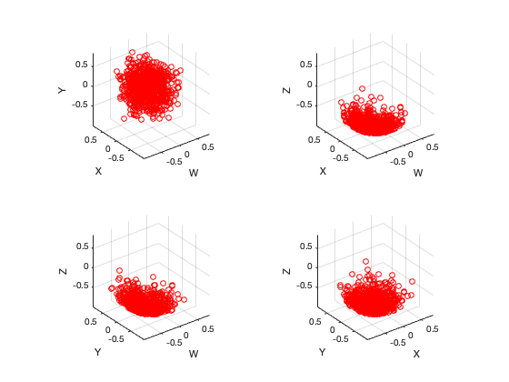

Four 3D scatter plots from quaternion array.
[p1, p2, p3, p4] = scatter4p3(q, varargin)
scatter4p3 plots four 3D scatter plots of elements in a quaternion vector. It supports the same parameter profiles as the similarly named MATLAB® functions, except that the first three parameters (X, Y, Z) are replaced by a single quaternion parameter.
The output parameters are the plot axes to the four subplots, permitting the user to apply the set command to make adjustments to the axis limits and labels etc.
>> scatter4p3(randvmf(randq, 10, 1e3, 1), 'r')
results in the creation of the following plot.
